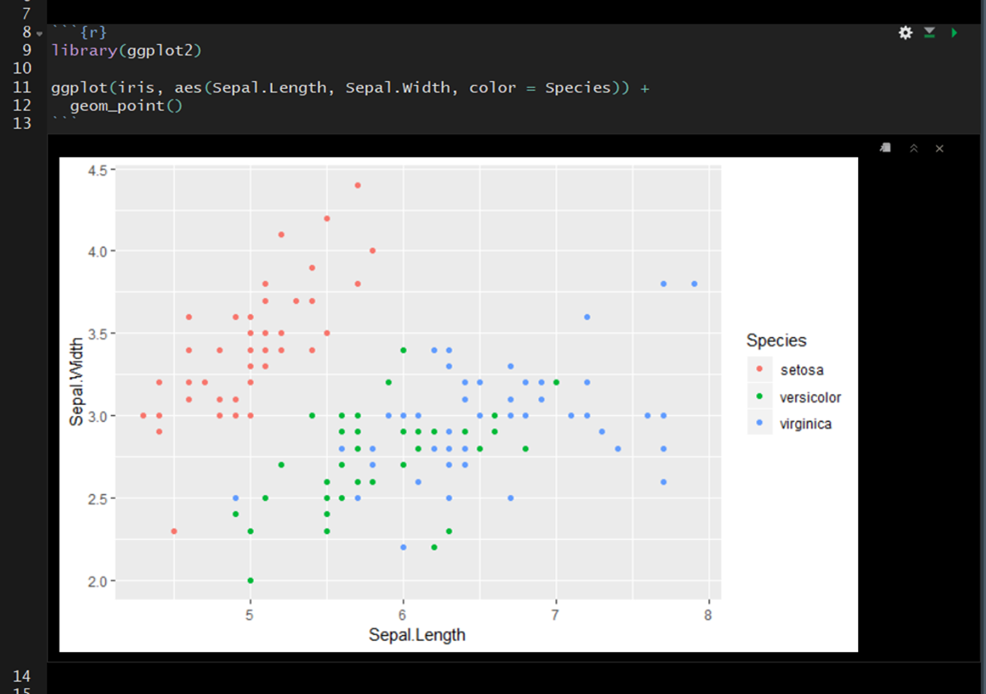
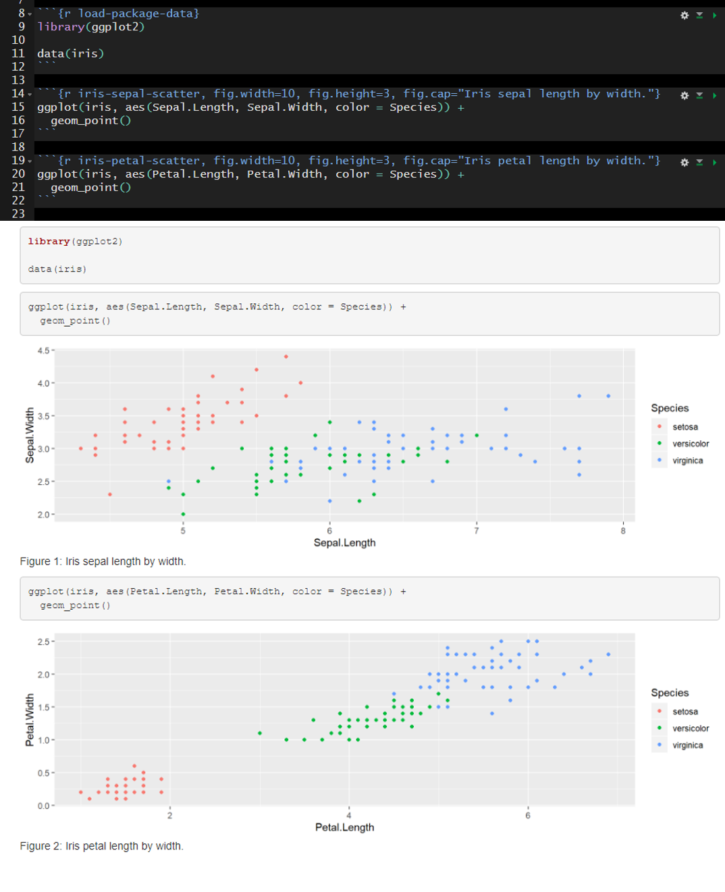
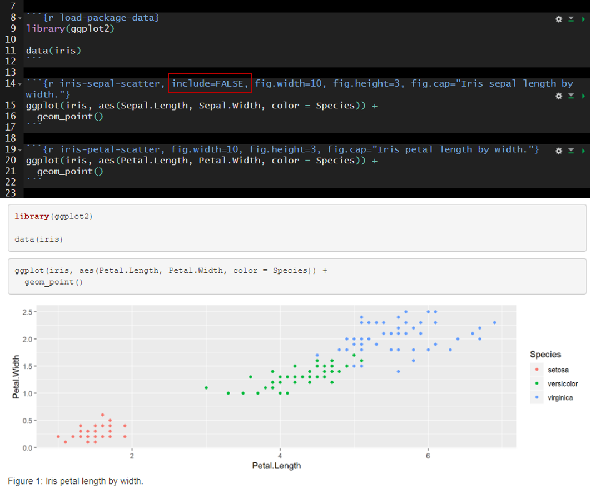
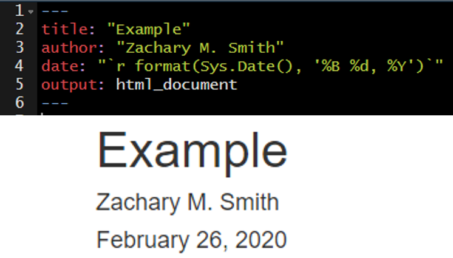

10 Lesson 4: Code Chunks and Inline Code
Up to this point in the workshop we have mostly just written a standard markdown document. However, we want to integrate R code into our document to create reproducible objects, such as figures, tables, and text. This integration will make will make it easier to reproduce the document.
10.1 Code Chunks
To insert a code chunk, press Ctrl + Alt + i in the source pane (top left pane in the default settings of Studio). A code chunk will appear: 
Inside the code chunk you can write and run R-code. If you print the output of your R-code it will appear below the code chunk in the source pane and the printed output will appear in the final compiled document. This is useful for producing figures and tables.

10.1.1 Options
There are a number of code chunk options that can be specified in the code chunk header to modify how the code chunk is rendered while kniting. These options will not be visible in the rendered document– even if you choose not to hide the code chunks in your rendered document.
A comprehensive list of chunk options can be found here: https://yihui.org/knitr/options/
10.1.1.1 name
Best practice is to include a short and unique name within each code chunk header. This will be especially beneficial if you need to troubleshoot an error in your document as you will be able to track the source of the error down by code chunk name. The “name” is not specified as an argument within the header; it is simply separated from the “r” by a space. This is exemplified in the image below on line 9 where “addition” is supplied as the name of the code chunk ({r addition}).

10.1.1.2 echo
A logical value (true or false) indicating if the code chunk should be visible in the rendered document. By default the code chunk will be visible upon knitting (echo=true). To hide a specific code chunk set echo to “false” (echo=false).
Include the code chunk in the rendered document with echo=true.

Exclude the code chunk in the rendered document with echo=false.

10.1.1.3 fig.width, fig.height, and fig.cap
The fig.width and fig.height options allow you to control the size of the figure generated from a given code chunk. fig.cap provides the ability to add a caption below the figure generated from a given code chunk.
Here is an example of the plot output form a code chunk.

Here I have specified fig.width, fig.height, and fig.cap. Notice that plot dimensions have changed from the previous image and a caption has been added to the bottom of the figure.

In many cases, you will want the captions to be numbered and you will want this to occur automatically. To this you will first need to install the package bookdown (install.packages("bookdown")). Specify in the YAML header that the output should be “html_document2” from the bookdown package (output: bookdown::html_document2). When you render the document the figures will now be automatically numbered by the order they appear in the document. To cross reference a figure by name in the text use \@ref(fig:figure_name). Using the example from the figure below, you might write “In \@ref(fig:IrisScatter) we can see that the species setosoa tend to have shorter sepal lengths than the other two species.” For more information visit https://bookdown.org/yihui/rmarkdown-cookbook/figure-number.html.
10.1.1.4 message and warning
Using message=FALSE and/or warning=FALSE will suppress messages and warnings preventing them from printing in the rendered document. Warning: Suppress these messages/warnings at your own risk. Without these messages/warnings you may make it very difficult to track down any issues in your code.
An example of messages that are produced with the default message=TRUE.

The messages above can be suppressed by setting message=FALSE in the code chunk header.

10.1.1.5 include
Code chunk headers with include=FALSE will be ignored when the document is rendered. This can be useful during document development. For example, you may have a code chunk producing an error that prevents you from rendering the rest of your document or you may be questioning the need to keep a given code chunk. include=FALSE will exclude the code from the rendered document without deleting the code entirely from the .Rmd file.
The default is include=TRUE. In the example below, include is not altered from the default and therefore all of the code chunks are present in the rendered document.

In the example below I added include=FALSE to the header of the second code chunk named “iris-sepal-scatter.” The second code chunk is excluded from the rendered document.

10.1.1.6 Setting Global Options
It can be helpful to establish global options to produce a standard format throughout the document. You can set this with the knitr function opts_chunk$set(). For instance, you may want to set a standard dimensions for figures produced by code chunks throughout your document. In the code chunk below, you can see that I set fig.width to 8 and fig.height to 4.
The options specified in opts_chunk$set() become the default when rendering the document. However, you still have the ability to overwrite these options for specific code chunks. Building off of the previous example, you may find that one out of ten of your plots is not aesthetically pleasing with fig.width = 8 and fig.height = 4. You could specify in the code chunk producing that plot that you want to set fig.width = 6 and fig.height = 6, for example.
10.2 Inline Code
Inline code enables you to insert R code into your document to dynamically updated portions of your text.
To insert inline code you need to encompass your R code within:
 .
.
For example, you could write:
 Which would render to: The mean sepal length found in the iris data set is 5.8433333.
Which would render to: The mean sepal length found in the iris data set is 5.8433333.
I frequently use inline code to make my YAML header date update to the date the document was last rendered.

You can reformat the date using the format() function, as depicted in the image below.

10.3 Your Turn
The point of this exercise is to get you familiar with code chunks and inline code, NOT to test your R knowledge; therefore, I have included the necessary code below each task.
- Add a code chunk using Ctrl + Alt + i to import the example data set.
read.csv(file = file.path("data", "zms_thesis_metrics.csv"), stringsAsFactors = FALSE)- Add a name to this code chunk header and all subsequent code chunk headers.
- Add plain text description above the code chunk.
- Add the following unordered list describing the contents of the imported data.
unique_id(character) unique sample IDlake(character) lake code: caz = Cazenovia lake, onon = Onondaga, and ot = Otiscolat(numeric) latitude of sampling locationlong(numeric) longitude of sampling locationsubstrate_size_d50(numeric) median particle size from pebble countconductivity(numeric) specific conductivity (µS/cm)richness(numeric) taxonomic richnessshannon(numeric) Shannon-Wiener diversity index valuespct_ephemeroptera(numeric) relative abundance of Ephemeroptera taxapct_amphipoda(numeric) relative abundance of Amphipoda taxapct_diptera(numeric) relative abundance of Diptera taxadom_1(numeric) relative abundance of the most dominant taxon observed in each sample
- Add a code chunk to import the tidyverse packages.
library(tidyverse)- Add plain text description above the code chunk.
- Add
message=FALSEto the code chunk header to prevent the package start-up messages
- Add a code chunk below
libary(tidyverse)to preprocess lake name (lake) associated with each sample.
thesis.df <- thesis.df %>%
mutate(lake = case_when(
lake %in% "caz" ~ "Cazenovia",
lake %in% "onon" ~ "Onondaga",
lake %in% "ot" ~ "Otisco",
TRUE ~ "ERROR"
),
lake = factor(lake, levels = c("Onondaga",
"Otisco",
"Cazenovia")))- Add a code chunk just below the YAML header to specify global code chunk options
- specify
fig.widthandfig.height - in the header specify
echo=FALSEto hide this code chunk– your reader does not need to see this
- specify
- Add a code chunk below the “Preproccessing” header and add the following DT code
- add this link (https://rstudio.github.io/DT/) to your description above the code chunk to describe where you can find more information on DT
- Add a code chunk below the “Study Area” header and add the following leaflet code
- add this link (https://rstudio.github.io/leaflet/) to your description above the code chunk to describe where you can find more information on leaflet
library(leaflet)
pal <- colorFactor(c("#619Cff", "#F8766D", "#00BA38"),
domain = c("Cazenovia", "Onondaga", "Otisco"))
leaflet(data = thesis.df,
options = leafletOptions(minZoom = 7,
maxZoom = 13)) %>%
addTiles() %>%
addCircleMarkers(~long, ~lat,
fillOpacity = 0.75,
fillColor = ~pal(lake),
stroke = FALSE,
popup = paste("Sample ID:", thesis.df$unique_id, "<br/>",
"Lake:", thesis.df$lake, "<br/>",
"Latitude:", thesis.df$lat, "<br/>",
"Longitude:", thesis.df$long)
)- Add a code chunk to generate a scatter plot.
- Add a caption
- Add a code chunk generate a boxplot.
- Modify the figure size
- Add a caption
- Add a brief interpretation of the figures into the “Conclusions” section.
- Bonus: If you have enough time, edit the scatter plot code chunk to make the figure interactive with plotly
- add this link (https://plot.ly/ggplot2/) to your description above the code chunk
- play around with the interactive plot and the tools provided at the top right of the plot
- For example, you can zoom in, click on points to get more information, take a snapshot of the current plot, etc.